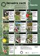
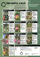
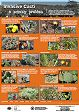
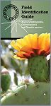

Documents and Resources
Identification resources  Invasive cacti a prickly problemOpuntia(pdf - 4,183KB)Invasive cacti a prickly problemAustrocylindropuntia & Cylindropuntia(pdf - 4,166KB)Identification poster for invasive cacti(pdf - 1,921KB)  Field Identification Guide(pdf - 7,150KB)
Weed Management Plan SA State Opuntioid Cacti Management Plan, 2009 (pdf 2,545 KB) External Opuntioid Resources Why invasive cacti are a problem - understanding the impacts, spread and management (ABC television) Burning trials to manage snake cactus (C. spinosior) in Longreach, Qld (YouTube video)
External Opuntioid Resources
SITE MAP
Australian Weeds Strategy | Weed Identification | Australian Weeds CommitteeTraining, & Materials | About Weeds Australia | Noxious Weeds List | Weed ManagementWeeds of National Significance | State and Territory Contacts
Privacy Statement
Legal Notice